Italie / Italy / Italia
Bienvenue en Italie !
L’Italie est un pays de 301 000 km2, soit un peu plus de la moitié de la France métropolitaine.
Bordé par la mer Méditerranée, il possède des frontières avec la France, mais aussi la Slovénie, l'Autriche et
la Suisse.
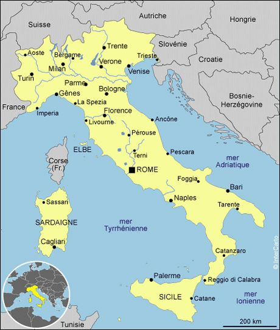
Ce pays compte des volcans toujours en activité comme le Vésuve et l’Etna,
des lacs magnifiques tels que le lac Majeur, le lac de Côme ou le lac de Garde
ainsi que des chaînes de montagnes impressionnantes, dont les Abruzzes et les Alpes.
Grâce à son climat méditerranéen, il fait beau toute l’année en Italie… sauf dans les régions enneigées, où il
fait très froid en hiver !

Destinations coups de coeur
Cinque Terre est une enclave de beauté, incontestablement un des plus beaux coins d'Italie. Dans le nord-ouest de la botte, les 5 Terres sont cinq villes construites à flanc de hautes falaises sur les collines escarpées surplombant la Méditerranée. Il n'y a pas plus pittoresque pour découvrir l'Italie.
 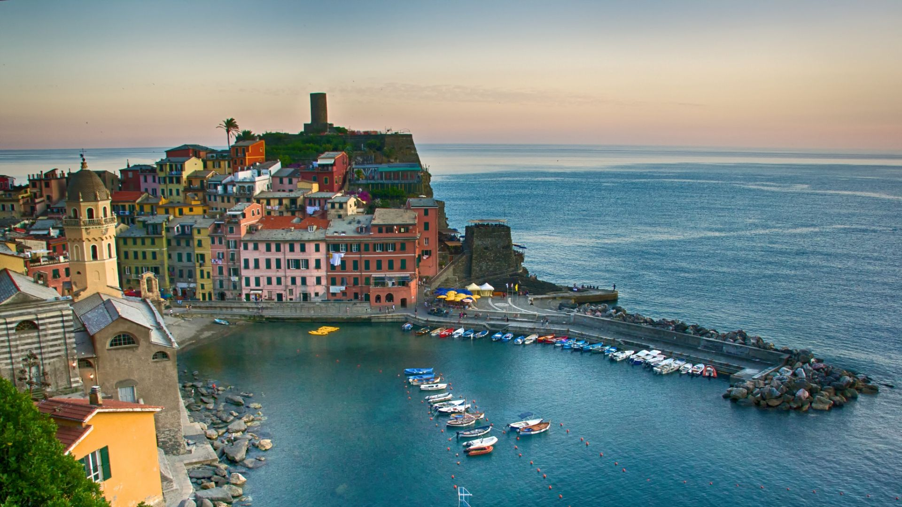
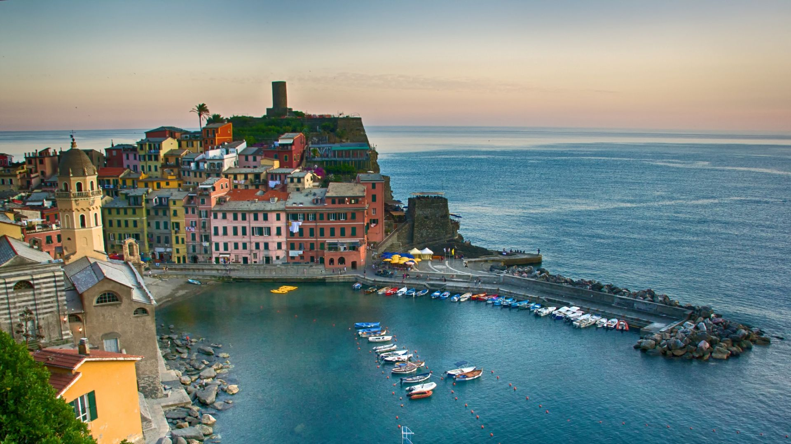
 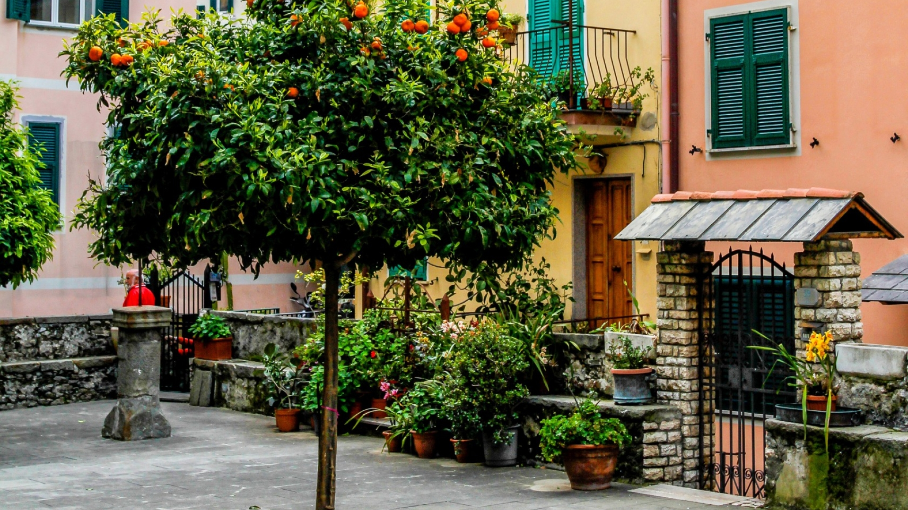
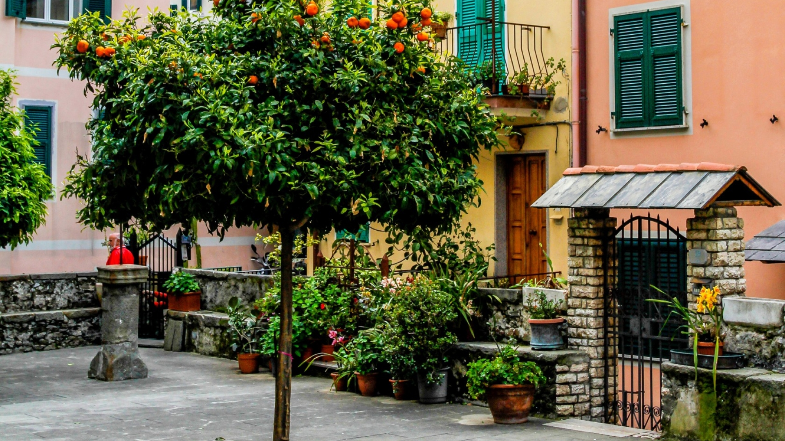

 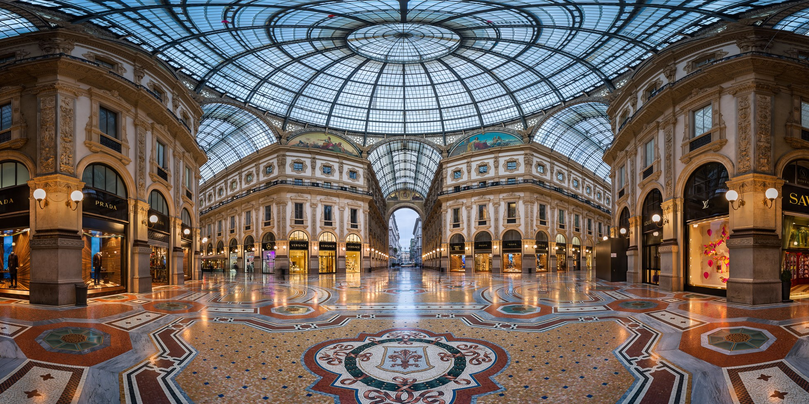
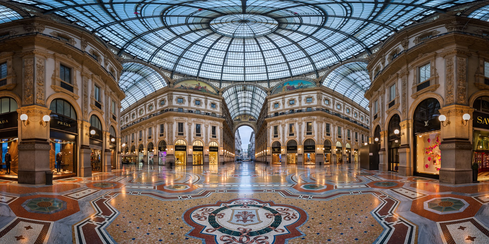
 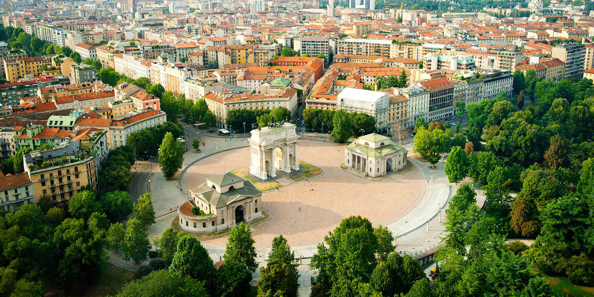
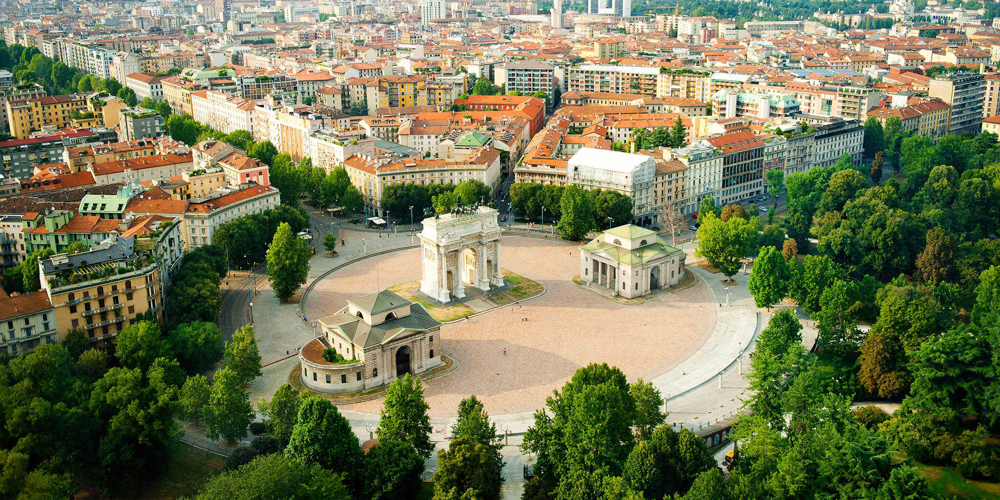
Principale ville économique et financière d’Italie, centre international de la mode et de l’élégance, Milan est une ville riche et dynamique. La longue histoire de la puissante ville lombarde lui a légué de très beaux édifices, comme son vaste Dôme gothique, sa galerie Vittorio-Emmanuele II recouverte par une grande verrière, le château des Sforza, le théâtre de la Scala, ainsi que plusieurs églises.
Souvent considèrée comme la plus belle ville de la planète, Venise est sans aucun doute la plus irréelle. De quelque façon qu'elle apparaise changeante et mystérieuse, déconcertante, voire oppressante, elle reste l'une des plus fascinantes invraissemblables et ingénieuses créations humaines. Sans oublier les îles de Murano, connue pour ses verreries, et Burano petite île de pecheurs.

 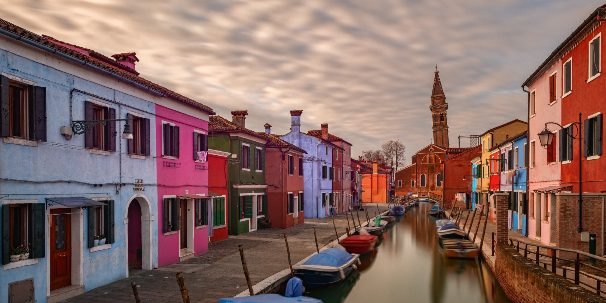
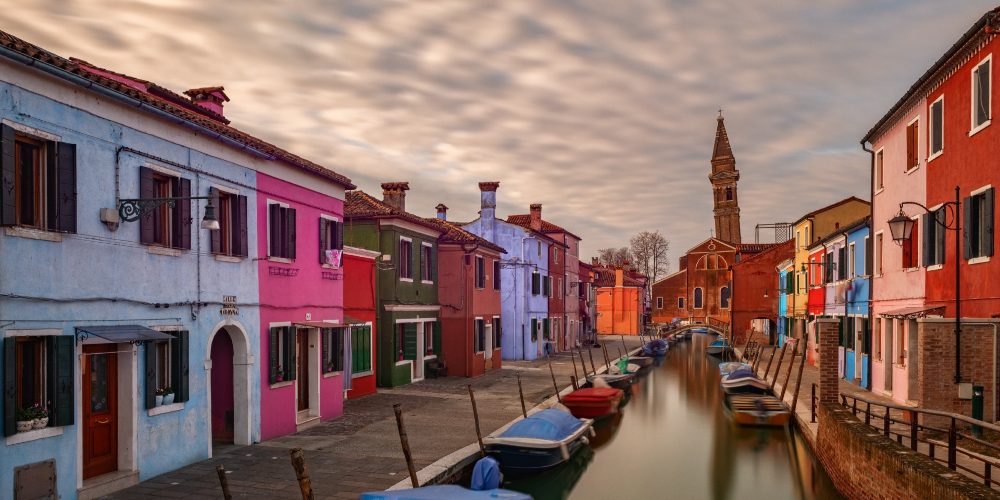
D'autres images de l'italie